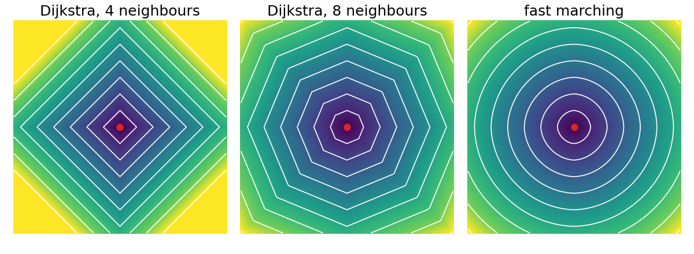

From Dijkstra to fast marching: continuous minimal paths
Image analysis
About this lecture
Dijkstra finds the cheapest path on the pixel graph. But the graph’s distances are not the distances of the plane: on a flat image the distance from a point grows in diamonds (4 neighbours) or octagons (8 neighbours), not circles.
The arrival time of a front that starts at a seed and moves with a given speed.
Fast marching: Dijkstra’s order, with a better update from two neighbours at once (Sethian, 1996).
One update by hand; why it approximates the Euclidean distance.
Costs from the image, and minimal paths by descending the arrival time.
How it relates to live-wire, geodesic active contours and watershed.
Slides titled The math give the formulas and proofs; the ideas are complete without them.
Distances on the grid are not round

The same flat cost (1 per pixel of length), the same seed: lines of equal distance every 10 pixels.
4 neighbours: the city-block distance. At 45° a point 100 px away gets 141: 41% too far.
8 neighbours: steps of 1 and \sqrt2. Exact on the axes and diagonals, up to 8% too far in between (at 22.5°).
Fast marching: circles, within about 1–2% here.
The arrival time of a front
Light a fire at the seed. It spreads in every direction, with a speed that may depend on the place: fast on cheap pixels, slow on expensive ones.
T(x) = the time at which the fire reaches the point x. Lines of equal T are the successive fronts.
With speed 1 everywhere, T is the Euclidean distance from the seed: the fronts are circles.
With the speed low on edges, the fronts slow down there: T becomes a distance that “costs more” across edges.
Running time is a cost per unit of length: P = 1/\text{speed}. T is the cheapest total cost of a continuous path, measured along its length, not counted in pixel steps.
The math: the Eikonal equation
Where the front passes x moving with speed F(x) > 0, it travels a distance F\,\Delta t in time \Delta t along the normal, so
|\nabla T(x)|\, F(x) = 1, \qquad \text{or}\qquad |\nabla T| = P,\quad P = 1/F, \qquad T = 0 \text{ at the seeds}.
This is the Eikonal equation. With P = 1 its solution is the Euclidean distance to the seeds (the distance transform of the morphology day, from the seed set). T(x) is also the minimal weighted length\min_\gamma \int_\gamma P\, ds over all curves \gamma from a seed to x.
Recall from the level-set day: a front moving with normal speed F is the zero level of \phi with \phi_t + F|\nabla\phi| = 0. When F never changes sign, each point is passed once, and \phi(x, t) = T(x) - t solves it: the arrival time is a level-set function that never needs to be updated in time.
Fast marching: Dijkstra with a better update
Keep everything of Dijkstra:
tentative values in a priority queue, the smallest is made final, then its neighbours are updated.
Change one thing, the update:
Dijkstra: d(v) = \min_u \big(d(u) + \text{cost}\big): the front arrives along one grid edge.
Fast marching: use the final neighbour along xand the final neighbour along y together, and solve for the time at which a straight front passing both would arrive. A front crossing the pixel diagonally is now seen as diagonal.
The values still only grow along the front, so “the smallest is final” still holds.
The math: the upwind update
At pixel v (spacing 1), let a = the smaller final value of its left and right neighbours, b = the smaller final value of its upper and lower neighbours (∞ if none is final). Discretise T_x^2 + T_y^2 = P^2 with one-sided (“upwind”) differences towards the known side:
If |a - b| < P: \displaystyle T = \frac{a + b + \sqrt{2P^2 - (a - b)^2}}{2}. Otherwise (only one useful neighbour): T = \min(a, b) + P, which is Dijkstra’s update.
Each T is larger than both a and b, so values never decrease along the front, and Dijkstra’s argument gives the order. Work O(N \log N), as Dijkstra.
One update by hand
A pixel with known neighbours T = 2 on its left and T = 2.5 above, flat cost P = 1:
Dijkstra (4 neighbours): \min(2, 2.5) + 1 = 3.
Fast marching: |2 - 2.5| = 0.5 < 1, so T = \big(4.5 + \sqrt{2 - 0.25}\big)/2 = 2.911.
With only the left neighbour known: 2 + 1 = 3; with 2 and 3.2: too far apart, again 3.
From a seed at (0, 0): T(1, 0) = T(0, 1) = 1, then T(1, 1) = \big(2 + \sqrt 2\big)/2 = 1.707, against \sqrt2 = 1.414 exactly and 2 for 4-neighbour Dijkstra. Next to a point seed the first-order update is crude; implementations set the pixels within a few pixels of the seed to their exact distance first (the demo uses 3 px). Far from the seed the error is small.
Try it: fronts on a grid
Costs from the image
As for live-wire, the cost P comes from the image:
Slow at edges: P = 1/g with the edge-stopping function g = 1/\big(1 + (|\nabla I|/k)^2\big) of the level-set day: P \approx 1 in flat regions and large on strong edges. A front from a seed inside a nucleus fills it quickly and then stalls at its boundary.
Fast along lines: P small on a bright thin structure (a neurite, a vessel): the front runs along it, and T measures the cost along the structure.
k (contrast) sets which edges count, like \sigma in the contrast weights of the graph-cut day.
Minimal paths: descend the arrival time
T has a single minimum, at the seeds, and no other local minima. So from any target:
Gradient descent on T (small steps against \nabla T) runs down to a seed. The curve it traces is the minimal path, at sub-pixel precision, not restricted to grid steps.
Dijkstra’s path follows the pointers: grid steps only, so a straight line at 30° becomes a staircase, longer than the line.
Same principle as before: compute the “table” (T) once, then read off any path by backtracking.
Three relatives
path
optimum
Live-wire (previous unit)
discrete, on the pixel graph
global (for its graph)
Fast marching + descent (today)
continuous
global (up to the discretisation)
Geodesic active contours (level-set day)
continuous
local, from a starting curve
The geodesic active contour minimises the same kind of weighted length \int g\, ds, but by moving a curve downhill: it can stop in a local minimum. Fast marching computes the global minimal path between two points directly, as live-wire does on the grid.
Fronts, flooding and watershed
Recall from the watershed day: flooding from markers also processes pixels in the order of a priority queue, and the basins meet at the watershed lines.
Fast marching with several seeds: each pixel is reached first by one seed’s front; the fronts meet where the arrival times from two seeds are equal (with P = 1, the perpendicular bisector: a Voronoi diagram).
Watershed flooding uses the maximum height along the way, not the accumulated time; its basins meet at the ridges of the image.
Same machinery, different “cost of a path”: sum (Dijkstra, live-wire), integral of P (fast marching), maximum (watershed).
Summary
Dijkstra’s grid distances are blocky: diamonds with 4 neighbours, octagons with 8.
The arrival timeT of a front with speed 1/P solves |\nabla T| = P; with P = 1 it is the Euclidean distance.
Fast marching = Dijkstra’s order + the upwind update from the smaller known neighbour along x and along y; O(N\log N); nearly round fronts.
Costs from the image (slow at edges, fast along lines); minimal paths by gradient descent on T, at sub-pixel precision.
The day’s arc: DP table (fixed order) → polar DP (closed curves) → Dijkstra (order found on the fly) → fast marching (continuous fronts).